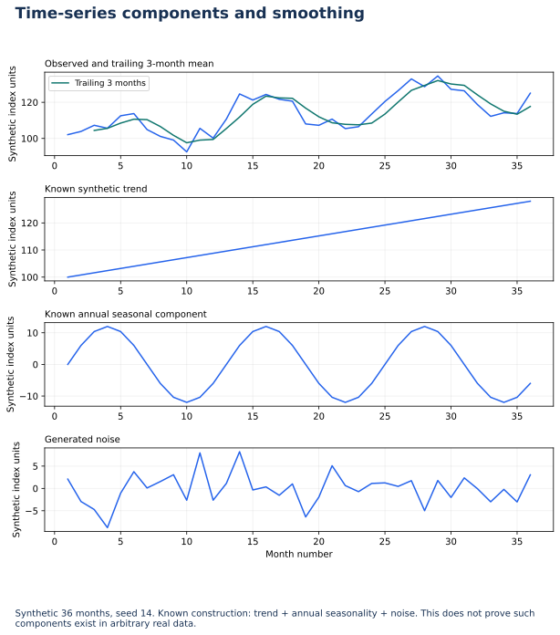

Lecture 14: Time Series Exploration
Trend, seasonality, moving averages, and monthly trend visualization — course topics aligned with the course Time Series Trend & Seasonality materials.
1. Learning Objectives
- 1 Define trend, seasonality, and residual noise in a series.
- 2 Resample event data to daily/weekly/monthly counts.
- 3 Compute and plot a simple moving average to reveal trend.
- 4 Compare the same month across years when data allows.
- 5 Produce a monthly trend visualization for stakeholders.
2. Components
- Trend — long-run direction (up, down, flat).
- Seasonality — repeating pattern at fixed period (week, month, year).
- Noise / residual — irregular variation left after trend and seasonality.
Accident counts often show weekend vs weekday effects and weather-driven seasonal spikes — EDA should surface these before modeling.
3. From Events to Series
df = pd.read_csv("datasets/accident_teaching.csv", parse_dates=["date"])
df = df.set_index("date").sort_index()
monthly = df.resample("MS").agg(
accidents=("accident_id", "count"),
casualties=("casualties", "sum"),
)
monthly["cas_ma3"] = monthly["casualties"].rolling(3, min_periods=1).mean()
monthly.plot(title="Monthly casualties with 3-month MA")4. Moving Average
A trailing average uses the last \(k\) periods smooths noise so trend is visible. Choose \(k\) to match the decision cadence (e.g., 3 months for quarterly planning). Too large \(k\) lags real change; too small leaves noise.
5. Practical (Course practice: Monthly Trend Visualization)
- Parse dates; set datetime index.
- Resample to monthly accident counts and casualty sums.
- Add a 3-month moving average.
- Plot both series; write three bullets: trend direction, any seasonal hint, one operational implication.
6. Knowledge Check
Q1. Primary role of a moving average in EDA:
7. Summary
- Trend, seasonality, and noise are useful components; not every series has identifiable trend or seasonality.
- Resample events → regular periods before charting.
- Moving averages and monthly plots are the course deliverables.
Worked practice: Respect temporal order
Use the 397-observation monthly electric-production series. Sort dates, verify monthly coverage, compute trailing 12-month means and 12-month change, and inspect the trend/seasonality example.
Interpretation check: Trailing windows use past/current observations; centered windows and backward filling can expose future values. This lesson is descriptive; a forecast needs chronological validation and a naive baseline.
Download runnable/guided lab: L14 Time Series Lab
Setup, all labs, datasets, DAX measures and capstone guidance · Interactive retail teaching report
Time-series components and smoothing


Interpret: Why are the first two full-window averages absent?
Three observations are required for a complete trailing window.
Read diagram labels (mobile text)
- 0
- 5
- 10
- 15
- 20
- 25
- 30
- 35
- 100
- 120
- Synthetic index units
- Observed and trailing 3-month mean
- Trailing 3 months
- 0
- 5
- 10
- 15
- 20
- 25
- 30
- 35
- 100
- 110
- 120
- Synthetic index units
- Known synthetic trend
- 0
- 5
- 10
- 15
- 20
- 25
- 30
- 35
- −10
- 0
- 10
- Synthetic index units
- Known annual seasonal component
- 0
- 5
- 10
- 15
- 20
- 25
- 30
- 35
- Month number
- −5
- 0
- 5
- Synthetic index units
- Generated noise
- Time-series components and smoothing
- Synthetic 36 months, seed 14. Known construction: trend + annual seasonality + noise. This does not prove such
- components exist in arbitrary real data.
Your reading progress
Completion is self-reported reading progress, not a mastery score. Use the lab and interpretation checks to assess understanding.